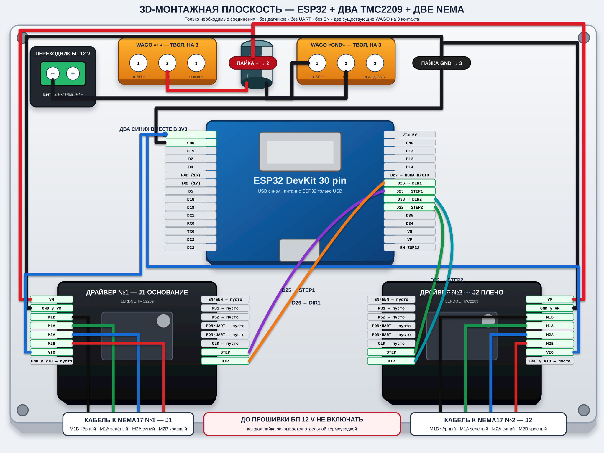
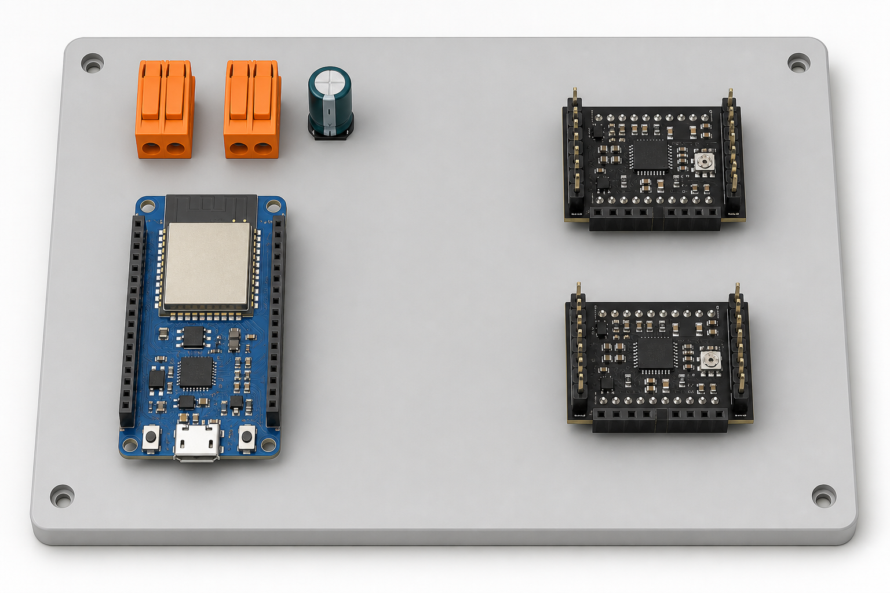

3D-монтажная плоскость J1 + J2
Две существующие WAGO, два драйвера и ESP32. Дополнительных WAGO нет: разветвления выполняются пайкой и закрываются термоусадкой.
Основная логика
- Красный выход WAGO «+» → одна пайка → два красных провода в
VMдрайверов. - Чёрный выход WAGO «GND» → одна пайка → три чёрных провода:
GND драйвера 1,GND драйвера 2,GND ESP32. - В каждый драйвер идёт только один GND — контакт рядом с VM. Нижний GND рядом с VIO остаётся пустым.
- ESP32 получает питание только через USB. 12 V в ESP32 не идёт.
Точная векторная 3D-схема

Нажми на изображение для открытия SVG во весь экран и увеличения.
Что именно соединить пайкой
- Соедини вместе один красный входящий и два красных выходящих провода. Выходы идут в два
VM. - Соедини вместе один чёрный входящий и три чёрных выходящих провода. Выходы идут в
GND1,GND2иGND ESP32. - К контакту
3V3ESP32 можно припаять два синих провода: один вVIO1, второй вVIO2. D25→STEP1,D26→DIR1,D32→STEP2,D33→DIR2.EN/ENN,MS1,MS2,PDN/UART,CLKпока оставить пустыми.
3D-концепт расположения компонентов

Это только визуальная основа расположения. Электрически точной является верхняя SVG-схема с подписанными проводами.
До первого запуска
USB и БП отключены во время пайки. До тестовой прошивки моторный БП 12 V не включать. После сборки сначала прозвоним отсутствие короткого замыкания, затем запустим каждый двигатель отдельно.